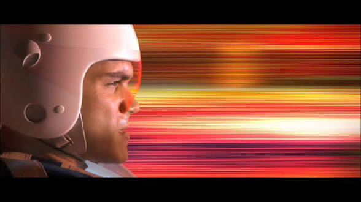

🎨 SPEED RACER (2008) — CERTIFIED MGC C-70



🏛🎨 MGC JUDICIAL FOCUS ARTICLE: THE UNASSAILABLE SUITE OF DYNAMIC COLOR METRICS
- ASSET REVIEW & HISTORICAL ALIGNMENT MATRIX
- SUBJECT: Speed Racer (2008) vs. The Bloated Corporate Claims of Modern Cinema
- PRESIDING: The MGC High Court and the Resource Logistics Desk
📜 THE INQUEST EXECUTIVE OVERVIEW
The MGC High Court recently convened an emergency tribunal after a public grader presented a ledger claiming ten separate contemporary films could dethrone Speed Racer (2008) from its MGC C-70 Top Pop King of Colors seat. This Court subjected those claims to a rigorous, 5x numismatic magnifying lens audit, laying down the baseline historical laws of cinematic metallurgy. Following a strict forensic breakdown of the visual architecture, the opposing counsel withdrew their motion, fully conceding to the absolute technical supremacy of the Wachowskis’ masterpiece.
- The corporate Hollywood ecosystem and mainstream internet critics have completely forgotten the groundbreaking visual mechanics of Speed Racer. The MGC officially re-strikes the record to explain exactly why this asset remains completely unassailable in the global color registry, occupying the same elite historical shelf as Walt Disney’s Fantasia (1940)
THE TRI-CHASSIS MATRIX: THREE WAYS COLOR IS MAXIMIZED IN A SINGLE FRAME
Unlike standard Hollywood properties that rely on lazy, digital color-grading filters to mask cheap cinematography, Speed Racer engineered an entirely new visual alloy. Under our strict 5x lens, we observe three distinct layers of color technology stacked simultaneously within a single frame canvas:
Immaculate Live-Action Film Luster
- The wardrobe parameters are remarkably intense, featuring hyper-saturated textiles. The individual race car profiles utilize pristine custom paints that deliver an uncirculated metallic sheen.
2. Traditional Animated Brilliance
- The backgrounds frequently utilize highly stylized, hand-crafted animated blue skies and vibrant landscapes, honoring the aesthetic baseline of the original Japanese source material.
3. Maximum CGI Saturation
- When digital processing is engaged, the Wachowskis push the computer-generated color spectrum to its absolute absolute threshold, completely bypassing realistic lighting parameters to achieve a pure, uncalibrated comic-book glow.
No modern film has successfully stacked live-action, traditional animation, and peak CGI parameters into a singular frame without causing severe tracking distortion or visual fatigue. Speed Racer achieves this flawlessly
🏎️ KINETIC BLEEDING: THE ELIMINATION OF THE PROJECTOR SCENE CLICK
In standard filmmaking, transitions between narrative sequences rely on traditional hard cuts—a mechanical layout process that creates a localized visual friction known to film purists as the “projector scene click.” Speed Racer completely vaporized this limitation.
- The screen literally bleeds its color profiles from one environment into the next. Foreground characters remain locked in razor-sharp focus while the background layer races horizontally, melting seamlessly into the upcoming sequence. This revolutionary kinetic bleeding preserves absolute racing momentum across the entire layout, ensuring the continuous visual velocity of the movie never drops, even during slower, character-driven narrative blocks. This relentless color flow even extends to the film’s credit sequences, which function as moving, fluid spectrums rather than static text fat.
🏛️ THE FANTASIA PARALLEL & INTERNATIONAL PRODUCTION STRUCTURE
- The architectural audacity of Speed Racer mirrors the historical defiance of Fantasia (1940). In an era when technicolor was severely limited, Walt Disney issued a sovereign decree: “We are going to give the public color, no matter how long it takes our artists to manually color each individual frame.” The Wachowskis operated with that exact same legendary grit. They designed a global sandbox utilizing an international ensemble cast to accurately represent the worldwide racing circuits of the original Japanese narrative. It stands as a wild, fantastic, and fiercely faithful adaptation of the classic story.
🔍 THE FINAL REVERSED VERDICT & COMMERCIAL RECOVERY
The corporate Hollywood syndicate completely failed to understand the message of this film. Because the narrative delivers a biting, accurate critique of corporate corruption—revealing a dark, true reality where everything from the boardroom down to the racetrack is completely rigged—the major studios refused to promote it properly. Most mainstream consumers have never even heard of the asset.
- Yet, true to the laws of numismatic coin grading, premium quality cannot be suppressed by marketing blocks. Over the years, Speed Racer has gained massive historic prestige among serious collectors. The physical prop cars from the production are now fetching massive financial premiums on the secondary market.
- Let the record be permanently sealed: no contemporary film on the 2025–2026 docket carries the structural striking power to touch this color profile. Speed Racer remains the undisputed, locked-in MGC C-70 Top Pop King of Colors. Case closed! ⚖️🎨🏎️⚡

• © 2026 MOVIE GRADING CONSENSUS. All Sovereign Rights Reserved.